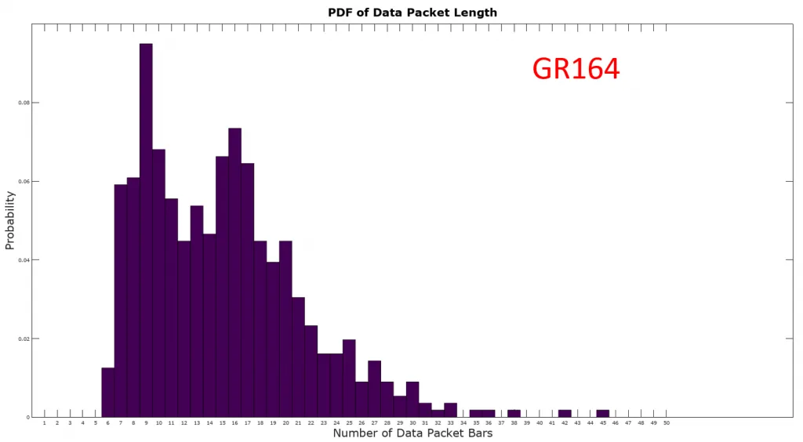
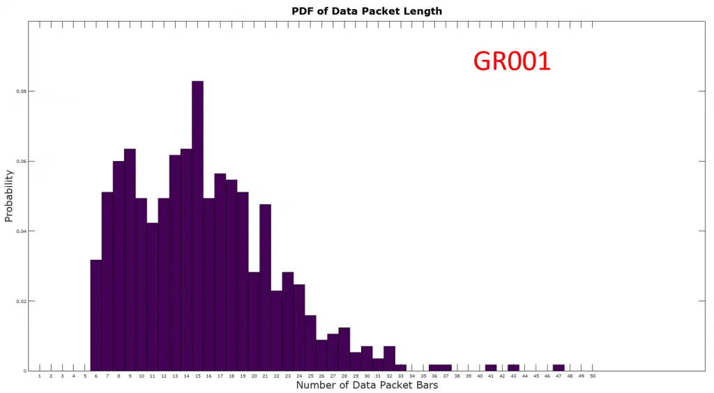
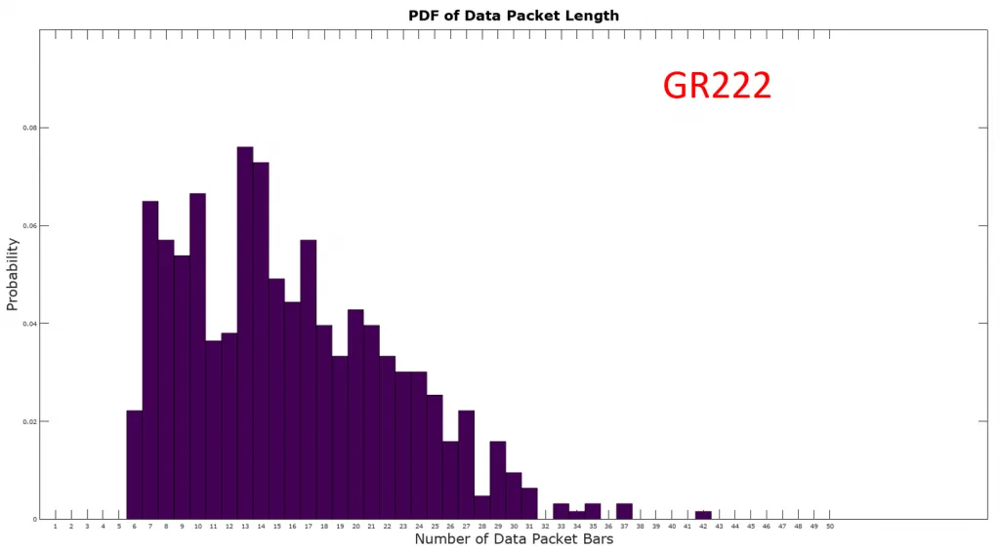
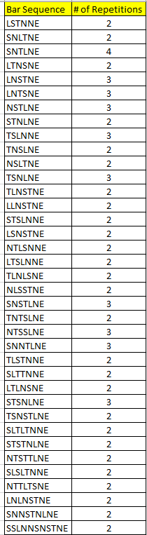
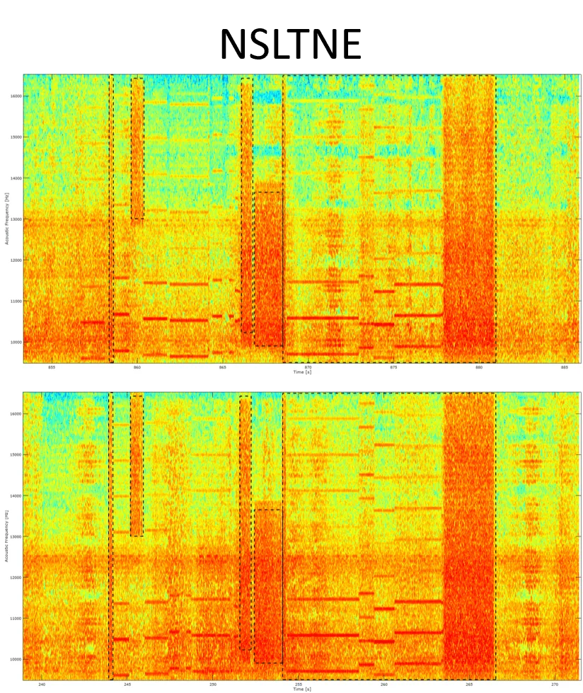

This is a follow up to an in-depth analysis of the data packets found in the Guardian obelisk audio [1]. The details of the data packets were reported, but the most profound result was the histogram of the number of bars seen in all of the extracted data packets. The structure of the histogram did not follow the usual shape associated with random processes, such as a Gaussian distribution, which lead to the preliminary conclusion that the data packets might encode something more than just procedural patterns without meaning.
Following the recommendation of that report, two additional experiments were carried out in two other Ancient Ruins: The first site ever discovered, GR001, and also GR222. The latter was selected because it was the farthest one (at the time of this writing) from the original Guardian bubble and perhaps would provide the highest contrast to the other sites. The goal of these two experiments was to note any significant differences in the distribution of packet lengths, which might help us decode the underlying information of these data packets.
For details regarding data acquisition and analysis methodology, please refer to the first analysis reported last month [1].
For starters, the figure below shows the GR164 O03 result from the last report. The version shown here is normalized for ease of comparison to subsequent results. It should be noted that, in this form, the histogram represents a probability distribution function (PDF). The PDF of the packet length (as measured by the number of “bars” in each data packet) has a minimum of 6 and a maximum of less than 50. Additionally, there are two prominent peaks, one in the vicinity of packet length 9 and the other near 16. The overall picture that we see here is rather odd for a totally random process (why not dial-in something simpler?).

The next order of business was to see how the above result changes in a different Guardian site. The figure below shows the PDF of packet lengths for the J03 obelisk in the GR001 site, which was selected because is the farthest one from GR164 within the Col 173 Guardian bubble. Data collection was carried out over the course of 21 hours and 567 data packets were extracted. The first thing to note here is that it is somewhat similar to the GR164 O03 result. The mean and standard deviation of the PDF below is 15.48 and 6.40, respectively, while the corresponding values for GR164 O03 are 15.07 and 6.27. The maximum and minimum values are very similar in the two results, but overall bulk of the distribution has shifted to the right by a small amount. If the data packets encode a distance value, then perhaps things have shifted to reflect a change in obelisk position relative to all other ones throughout the galaxy. Alternatively, these two results are essentially the same within statistical limits and what we see here is a random process that follows some sort of bimodal PDF.

In order to see if we can observe a higher degree of change in the packet length PDF relative to the GR164 O03 result, a data collection was carried out in one of the sites located in the Eorl Auwsy nebula, which, at the time of this writing, was home to the most distant Ancient Ruins. Data collection was carried out over the course of 26 hours, yielding 631 data packets. The packet length PDF for the GR222 B02 obelisk is shown below. Again, the first thing to note is the general resemblance to the GR164 O03 result. There are two prominent peaks centered around packet lengths 8 and 14. The mean and standard deviation of the distribution are respectively 15.83 and 6.60, both of which are higher than the GR164 O03 values of 15.07 and 6.27. One can see that the bulk of the distribution is shifted to the right even more than the GR001 J03 result. The implication here is that the distribution is shifted to the right because the majority of other obelisks are farther away than in the first two experiments. However, if data packets actually represent distances, then given the 22,000 Ly in separation between GR164 and GR222 one would expect a more dramatic shift in the distribution. Such dramatic shift would have made it much easier to correlate the content of the data packets with physical quantities, so its absence means a serious deciphering effort is still out of reach.

For convenience, an animated figure comparing the three PDFs is shown below.
Despite the ambiguous statistical properties of the data packet lengths, we wanted to see if any of the bar sequence patterns repeated themselves. Of the 1756 data packets collected, 37 exhibited sequence of bars that were observed at least twice, as shown in the table below. Most of them only had 2 repetitions, but some repeated 3 times. One particular bar sequence, SNTLNE, was observed a total of 4 times.

As noted in the previous data packet analysis [1], there are a number of sparse spaces that can appear between adjacent bars. If these do not convey information, then we can conclude that we have seen a good number of repetitions in the data.
If the sparse spaces do carry information, then no data packet has ever been observed twice. Although not exactly the same, the two data packets below (NSLTNE) are nearly identical. The keen eye will see that two of the sparse spaces are swapped, but otherwise the two are the same.

Analysis of data packets from the obelisk audio in the GR001 and GR222 sites was carried out. We have made the following observations:
It’s hard to make solid conclusions at this time, but the evidence seems to point more strongly toward data packets that encode random, meaningless patterns.
However, it is endlessly puzzling why a random process would follow the type of bimodal PDF observed at the three sites. It’s difficult to see why the fdev…er, Guardians would adopt these distributions. Perhaps we’re just seeing the echoes of a Monolith network that hasn’t been fully operational for millions of years, the secrets of which we’ll never fully uncover.
Given that Engineer Ram Tah has not yet responded to an Open Letter [2,3] requesting his feedback, only one more experiment is in the works for this line of inquiry. We might go back to GR164 O03 and reproduce the first experiment: if we see a rightward shift in the PDF similar to that of GR222 B02, then we can conclude that we simply have a rather odd bimodal PDF without underlying meaning.
[1] CMDR Maligno, “Analysis of Guardian Obelisk Audio Data Packets”, https://canonn.science/codex/analysis-of-guardian-obelisk-audio-data-packets/
[2] CMDR Maligno, “An Open Letter to Engineer Ram Tah”, https://forums.frontier.co.uk/threads/an-open-letter-to-engineer-ram-tah.389684/
[3] Canonn Media, Canonn Faction News Report 11-11-3303, https://www.youtube.com/watch?v=6OONrDzpJVs&list=PLP26MSlf_N9e1-7ftrY3ImSHhU4sWMs6U&index=10